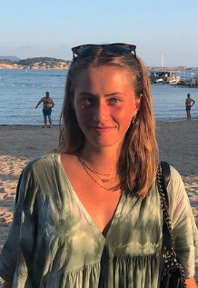
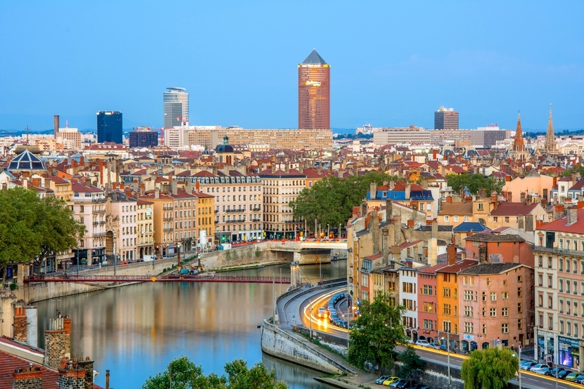
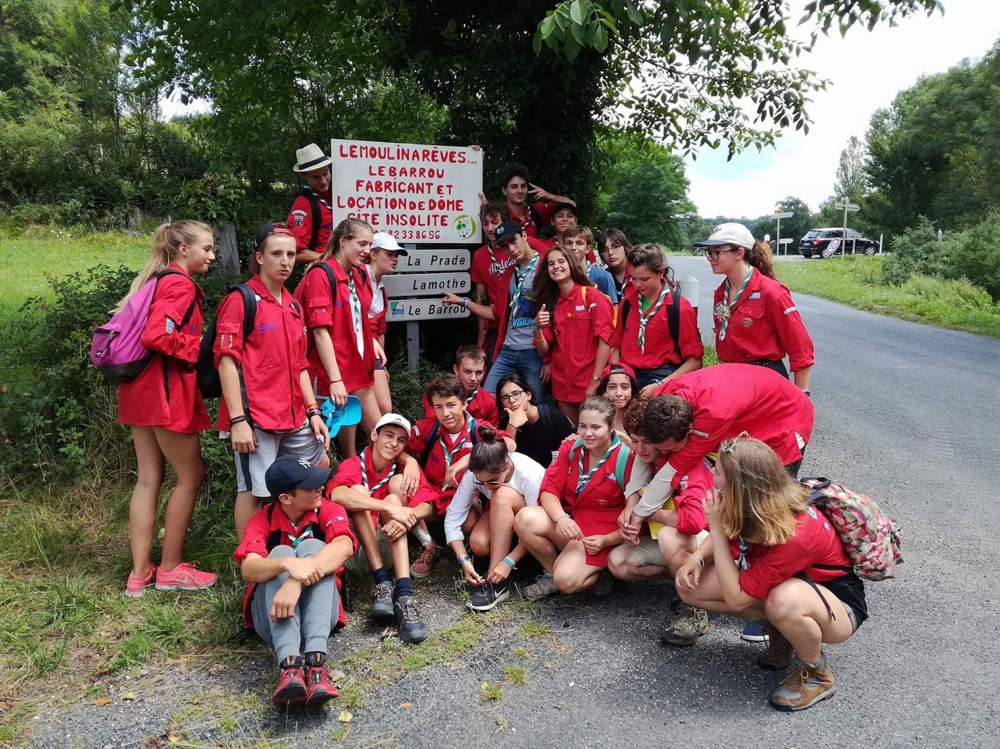

My name is Alice and this is my profile
I live in Lyon, and i am a business school student. what stands out the most about my character traits is that, i'm hardworking, i'm curious, creative, open-minded and sociable. I love fashion, doing shopping, travelling, doing humanitarians trips, and taking pictures.
Click to discover more about my experiencesMy city
Since my childhood, I have moved around a lot, I have been lucky enough to live in several countries and cities. I arrived in France 12 years ago, and it's been 2 years since I live in Lyon after having been 10 years in Paris, it was again a big change in my life, but I love my new life in this city !
My studies
Actually, i'm studying in Esdes business school in Lyon because i want to work in the fashion management. That is why i reoriented myself in this studies, because last year, i was studying the fashion design in Marseille and i realized that i was rather made for fashion management. Now, i love what i am doing and i learn things which interests me much more.
My working experiences

I have always been curious and hardworking, that's how I acquired some work experiences that allowed me to realize the field in which I want to work later. For example, I did internships in companies such as Jacadi, a brand of children's clothing, where I loved discovering the process of creating a fashion collection. Subsequently, I had the opportunity to participate in the setting up of stands at the who's next fashion market Also, in this area, I had the opportunity to do an internship as an assistant stylist for a shoot in Brazil. I have also done student jobs such as waitress in a bar / restaurant, multi-skilled team member in Leclerc drive and many babysittings.
My interests
Apart from my professional projects or experiences, I am very interested in the culture of travel and discovery. I have had it in particular through the practice of scouting, thanks to which I have had humanitarian, ecological and solidarity experiences throughout France. I am also preparing a humanitarian trip with my scout team abroad with children. Otherwise, I love dancing, photography, and photo editing